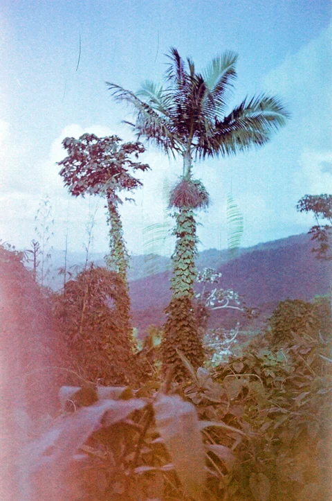

Vogue China
Fashion Editorial
A personal approach to portraiture, fashion, and storytelling.

“Personal, intimate,
and refreshingly direct.”

Fashion Editorial

Rouge Allure
International Beauty Campaign